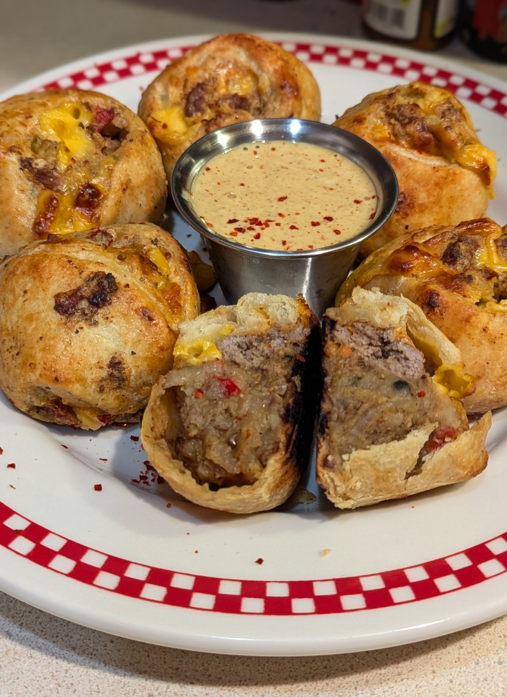

Rapp Snitch Knishes

A delicious dish fresh from the Metal Fingers Kitchen
As everyone knows, Rapp Snitch Knishes are traditionally made with rats and/or stool pigeons. Unfortunately, I couldn’t find any of those at my local grocer, so I decided ground beef would be a good substitute. I took some liberties with the filling and made a kind of freestyle chopped cheese. I originally went with just seasoned ground beef, some hot peppers, onions, and cheese but that version came out too dry. Turns out there is a reason knishes have mashed potatoes in them. It adds moisture to the mix helping the pastry cook lighter and a better mouthfeel for the filling. Not traditional for chopped cheese, but there’s nothing very traditional about any of this recipe.
Ingredients:
For the dough
- 2 3/4 cups all-purpose flour, plus more as needed
- 1 teaspoon kosher salt
- 1 teaspoon baking powder
- 1 large egg, beaten
- 1 teaspoon white vinegar
- 1/2 cup canola oil
- 1/2 cup warm water
For the Filling:
- 2 pounds russet potatoes, peeled, diced, and boiled in salted water until tender
- 1 pound ground beef
- 1/2 medium yellow onion, sliced thin
- 1/3 cup pickled jalapenos, chopped
- 3 tablespoons Old Bay
- 2 tablespoons butter
- 1 teaspoon kosher salt
- 1 teaspoon black pepper
- 12 slices American cheese
- Ketchup
- Mustard
- Olive oil for baking
Make the Dough
- Whisk flour, salt, and baking powder together in a bowl. Make a well in the center.
- Add the beaten egg, vinegar, oil, and warm water. Mix by hand until the dough pulls together.
- Turn the dough out onto the counter and knead until soft, smooth, and elastic. Wrap in plastic wrap and refrigerate for at least 1 hour.
Make the Filling
- Begin by boiling the potatoes until they can be pierced with a fork. Drain the potatoes and mash them with a potato masher or fork. You don’t need smooth perfect mashed potatoes. Embrace a few lumps. Mix in 1 tablespoon Old Bay, butter, salt & pepper. Set aside.
- Heat a large cast-iron skillet over medium-high heat. Add the onion, ground beef, and 1 tablespoon Old Bay. Cook undisturbed until it develops a crust, 2 to 3 minutes. Flip with a spatula, breaking up the meat. Add in the jalapenos and the remaining Old Bay. Stir to combine & continue cooking until the ground beef is crispy, about 3-5 minutes.
- Add the ground beef mixture to the bowl with the potatoes. Stir to combine thoroughly. Place the bowl in the fridge to cool completely.
Assemble the Knishes
- Preheat the oven to 375°F. Line two baking sheets with Silpats or parchment paper. Take the dough from the fridge and let it come to room temperature.
- Divide the dough in half & flatten one half into a rectangle on a floured surface. Roll out into a larger rectangle about 1/8-inch thick, pulling the corners as needed. The key is to make the dough as thin as possible.
- Place 6 slices of American cheese along one long end, about 3 inches from the edges. Drizzle with ketchup & mustard. Top with 2-3 cups of filling pressed tightly into a long sausage shape across the cheese. Beat the egg with water and brush over the opposite end and a little on the sides. Starting with the filling side, roll up toward the egg-washed side. Press in the filling; rolling as tightly as possible, and then roll over so the seam side is on the bottom.
- Trim off excess dough from the ends. Cut the dough into 8 equal pieces. Lightly flour your hands and seal the top & bottom of each knish by pinching them shut. Squish down the top and tuck everything into the center to form a round knish. Repeat with the remaining dough and filling. Brush the bottoms with olive oil and place them on the prepared baking sheets. Brush the tops in the egg wash.
- Bake in the preheated oven for about 15 minutes. Rotate trays and cook until golden brown, about another 15 minutes. Let cool until just warm or room temperature.
Bonus Sauce
Hot Honey Mustard Ranch
- 2 tablespoons Dijon mustard
- 2 tablespoons hot honey
- 1 tablespoon Ranch dressing
Just mix it all in a bowl.